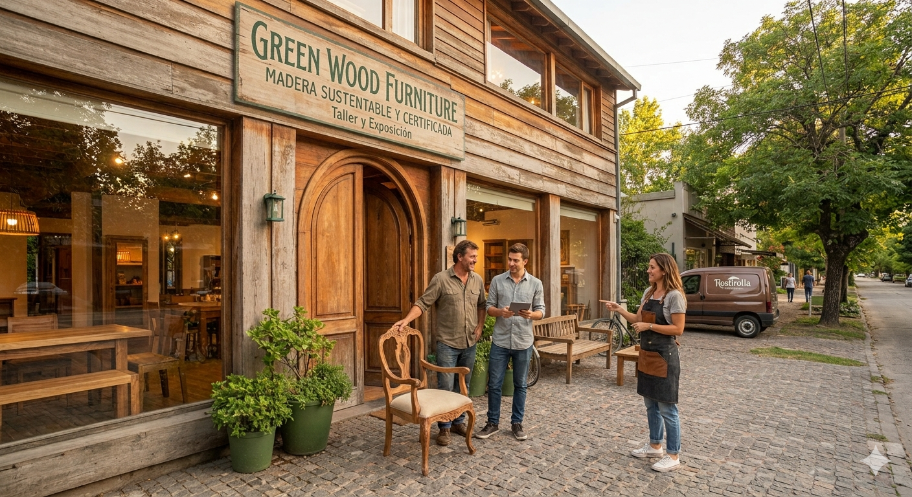

Sobre nosotros

Nuestra Historia: Familia, Madera y Futuro. En Green Wood, creemos que el diseño de interiores y el respeto por la naturaleza pueden convivir en perfecta armonía. Somos tres hermanos apasionados por el diseño sostenible (dos hermanos y una hermana) que decidimos transformar un oficio familiar en un compromiso activo con el planeta. Cada mueble que sale de nuestro taller lleva consigo la promesa de durabilidad, belleza natural y, sobre todo, responsabilidad ambiental. El Origen de Nuestro CompromisoNuestra misión es clara: crear hogares cálidos sin dejar una huella negativa en la Tierra. Por eso, garantizamos que el 100% de nuestras colecciones se fabrica exclusivamente con madera sustentable de origen 100% certificado. Bosques Certificados: Trabajamos únicamente con proveedores que reforestan y cuidan los ciclos naturales del suelo. Procesos Limpios: Utilizamos acabados ecológicos, aceites naturales y barnices libres de tóxicos para proteger tu salud y el aire que respiras. Diseño Consciente: Creamos piezas pensadas para durar generaciones, combatiendo la cultura del mobiliario desechable. Tres Miradas, Un Mismo LegadoDesde nuestra tienda física, un espacio diseñado bajo principios de arquitectura consciente, nos dividimos las tareas para dar vida a tus proyectos. Combinamos la artesanía tradicional, el diseño contemporáneo y la gestión ecológica para que llevar un mueble Green Wood a tu hogar sea una elección de vida consciente.